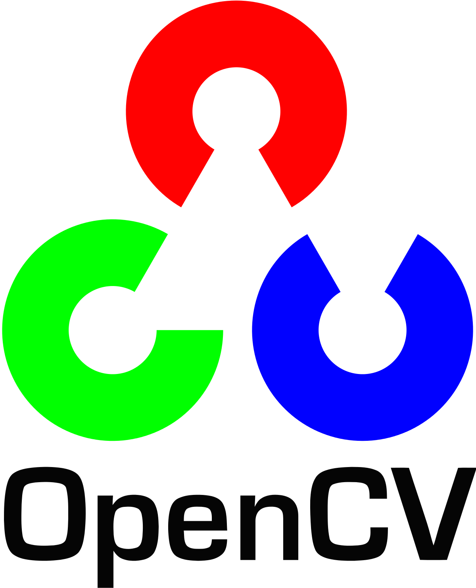

Meet our vigorous team ✨
Why Use Abdotonomous?
We bring out a super handy architecture for autonomous and semi-autonomous vehicles. The system provides some fancy features, yet, is capable of adding more and more without getting your hands dirty. Vehicles may be electric cars, ROVs, AUVs or UAVs.
- 


Extensibilty
Adding a new feature is just a piece of cake. Whenever you have a feature, implement it and
add new node to the system.
Portability
With our docker image, you can use the system anywhere regardless of the hosting platform.
Creative Commons License
Under the license of Attribution-NonCommercial 4.0 International, the source code is
available and you are free to use and modify it for non-commericial use. We are also
happy to recevie pull requests from you!
Find out more